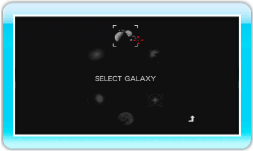

8 |
Spielstart |
 |
|
Wähle Orbient im Wii-Menü aus und anschließend im Startbildschirm des Kanals die Option START, um den Speicherdaten-Auswahlbildschirm anzeigen zu lassen. Wähle einen der angezeigten Speicherplätze, indem du mit dem Cursor darauf zeigst und drücke

Drücke auf dem Titelbildschirm Wähle eine Galaxie aus, um die Stage-Auswahl aufzurufen. Hier kannst du wählen, welche der fünf Stages der Galaxie du bereisen möchtest. Zu Beginn ist nur die obere linke Stage wählbar. Triff deine Wahl und das Spiel beginnt!
Nach Abschluss aller Stages
Schließe alle Stages erfolgreich ab, um weitere Reiseziele freizuschalten. Wenn du bestimmte Bedingungen erfüllst, werden sogar noch mehr Stages wählbar. Versuche, sie alle zu erobern!
|

 |
 |
 |